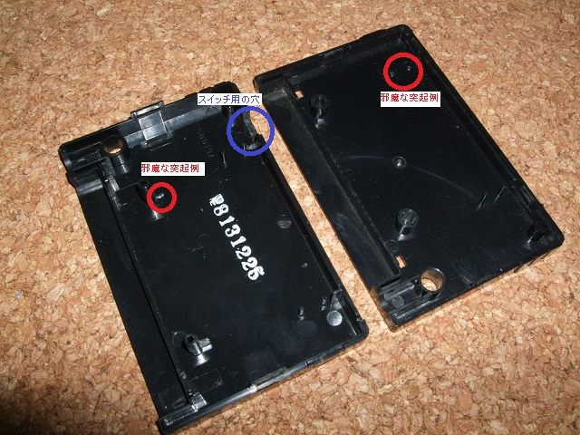

16．ケースを閉じる
ケースを閉じれば完成です。しかし、スイッチ用の穴を開けたり、配線や電気二重層コンデンサが邪魔だったりで ケースが閉じない場合があります。無理に閉めずに落ち着いてぶつかっている箇所を確認してカッターなどで削りましょう。

完成したあなた、おめでとうございます。
簡単だったですか、それとも面倒臭かったですか？完成報告を待っています。
これを製作出来るようになったのなら、もうあなたはビギナー卒業です。
次へ
 次へ
次へ